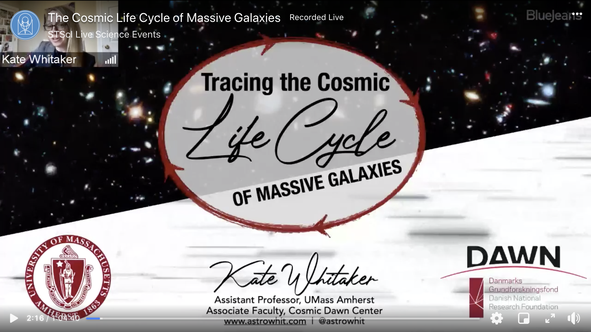
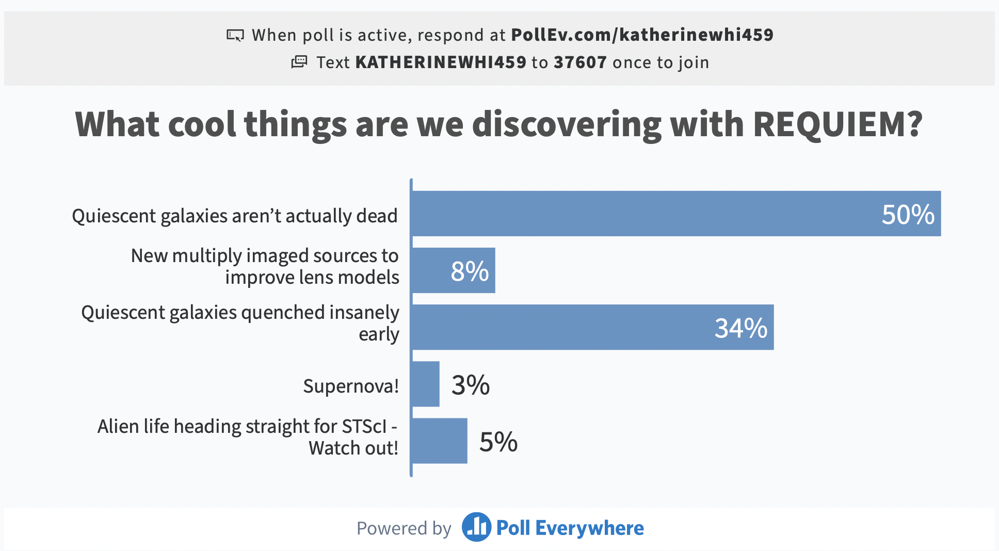

Space Telescope Science Institute Colloquium
It was my pleasure to give the weekly colloquium at Space Telescope Science Institute on Wednesday, May 5, 2021. While there were some technical issues at the start, it was so much fun to interact with the place that makes the magic happen with the Hubble and James Webb Space Telescopes. You can find the recording of the talk here (just do me a favor and skip over minutes 4 through 8, please!): fb.watch/5iXUjkpGM2
I had fun integrating a few polling questions into the slides (amazingly easy to do, as it turns out). Below you can see the responses to the first question - we are discovering surprises that none of us seriously anticipated in this data set!

